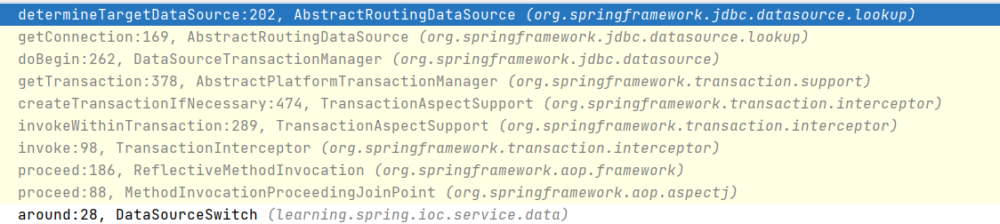

- 00 导读 5分钟轻松了解Spring基础知识.md.html
- 00 开篇词 贴心“保姆”Spring罢工了怎么办？.md.html
- 01 Spring Bean 定义常见错误.md.html
- 02 Spring Bean 依赖注入常见错误（上）.md.html
- 03 Spring Bean 依赖注入常见错误（下）.md.html
- 04 Spring Bean 生命周期常见错误.md.html
- 05 Spring AOP 常见错误（上）.md.html
- 06 Spring AOP 常见错误（下）.md.html
- 07 Spring事件常见错误.md.html
- 08 答疑现场：Spring Core 篇思考题合集.md.html
- 09 Spring Web URL 解析常见错误.md.html
- 10 Spring Web Header 解析常见错误.md.html
- 11 Spring Web Body 转化常见错误.md.html
- 12 Spring Web 参数验证常见错误.md.html
- 13 Spring Web 过滤器使用常见错误（上）.md.html
- 14 Spring Web 过滤器使用常见错误（下）.md.html
- 15 Spring Security 常见错误.md.html
- 16 Spring Exception 常见错误.md.html
- 17 答疑现场：Spring Web 篇思考题合集.md.html
- 18 Spring Data 常见错误.md.html
- 19 Spring 事务常见错误（上）.md.html
- 20 Spring 事务常见错误（下）.md.html
- 21 Spring Rest Template 常见错误.md.html
- 22 Spring Test 常见错误.md.html
- 23 答疑现场：Spring 补充篇思考题合集.md.html
- 导读 5分钟轻松了解一个HTTP请求的处理过程.md.html
- 知识回顾 系统梳理Spring编程错误根源.md.html
- 结束语 问题总比解决办法多.md.html
- 捐赠
20 Spring 事务常见错误（下）
你好，我是傅健。
通过上一节课的学习，我们了解了 Spring 事务的原理，并解决了几个常见的问题。这节课我们将继续讨论事务中的另外两个问题，一个是关于事务的传播机制，另一个是关于多数据源的切换问题，通过这两个问题，你可以更加深入地了解 Spring 事务的核心机制。
案例 1：嵌套事务回滚错误
上一节课我们完成了学生注册功能，假设我们需要对这个功能继续进行扩展，当学生注册完成后，需要给这个学生登记一门英语必修课，并更新这门课的登记学生数。为此，我添加了两个表。
- 课程表 course，记录课程名称和注册的学生数。
CREATE TABLE `course` (
`id` int(11) NOT NULL AUTO_INCREMENT,
`course_name` varchar(64) DEFAULT NULL,
`number` int(11) DEFAULT NULL,
PRIMARY KEY (`id`)
) ENGINE=InnoDB DEFAULT CHARSET=utf8;
- 学生选课表 student_course，记录学生表 student 和课程表 course 之间的多对多关联。
CREATE TABLE `student_course` (
`student_id` int(11) NOT NULL,
`course_id` int(11) NOT NULL
) ENGINE=InnoDB DEFAULT CHARSET=utf8;
同时我为课程表初始化了一条课程信息，id = 1，course_name = “英语”，number = 0。
接下来我们完成用户的相关操作，主要包括两部分。
- 新增学生选课记录
@Mapper
public interface StudentCourseMapper {
@Insert("INSERT INTO `student_course`(`student_id`, `course_id`) VALUES (#{studentId}, #{courseId})")
void saveStudentCourse(@Param("studentId") Integer studentId, @Param("courseId") Integer courseId);
}
- 课程登记学生数 + 1
@Mapper
public interface CourseMapper {
@Update("update `course` set number = number + 1 where id = #{id}")
void addCourseNumber(int courseId);
}
我们增加了一个新的业务类 CourseService，用于实现相关业务逻辑。分别调用了上述两个方法来保存学生与课程的关联关系，并给课程注册人数+1。最后，别忘了给这个方法加上事务注解。
@Service
public class CourseService {
@Autowired
private CourseMapper courseMapper;
@Autowired
private StudentCourseMapper studentCourseMapper;
//注意这个方法标记了“Transactional”
@Transactional(rollbackFor = Exception.class)
public void regCourse(int studentId) throws Exception {
studentCourseMapper.saveStudentCourse(studentId, 1);
courseMapper.addCourseNumber(1);
}
}
我们在之前的 StudentService.saveStudent() 中调用了 regCourse()，实现了完整的业务逻辑。为了避免注册课程的业务异常导致学生信息无法保存，在这里 catch 了注册课程方法中抛出的异常。我们希望的结果是，当注册课程发生错误时，只回滚注册课程部分，保证学生信息依然正常。
@Service
public class StudentService {
//省略非关键代码
@Transactional(rollbackFor = Exception.class)
public void saveStudent(String realname) throws Exception {
Student student = new Student();
student.setRealname(realname);
studentService.doSaveStudent(student);
try {
courseService.regCourse(student.getId());
} catch (Exception e) {
e.printStackTrace();
}
}
//省略非关键代码
}
为了验证异常是否符合预期，我们在 regCourse() 里抛出了一个注册失败的异常：
@Transactional(rollbackFor = Exception.class)
public void regCourse(int studentId) throws Exception {
studentCourseMapper.saveStudentCourse(studentId, 1);
courseMapper.addCourseNumber(1);
throw new Exception("注册失败");
}
运行一下这段代码，在控制台里我们看到了以下提示信息：
java.lang.Exception: 注册失败
at com.spring.puzzle.others.transaction.example3.CourseService.regCourse(CourseService.java:22)
//......省略非关键代码.....
Exception in thread "main" org.springframework.transaction.UnexpectedRollbackException: Transaction rolled back because it has been marked as rollback-only
at org.springframework.transaction.support.AbstractPlatformTransactionManager.processRollback(AbstractPlatformTransactionManager.java:873)
at org.springframework.transaction.support.AbstractPlatformTransactionManager.commit(AbstractPlatformTransactionManager.java:710)
at org.springframework.transaction.interceptor.TransactionAspectSupport.commitTransactionAfterReturning(TransactionAspectSupport.java:533)
at org.springframework.transaction.interceptor.TransactionAspectSupport.invokeWithinTransaction(TransactionAspectSupport.java:304)
at org.springframework.transaction.interceptor.TransactionInterceptor.invoke(TransactionInterceptor.java:98)
at org.springframework.aop.framework.ReflectiveMethodInvocation.proceed(ReflectiveMethodInvocation.java:186)
at org.springframework.aop.framework.CglibAopProxy$DynamicAdvisedInterceptor.intercept(CglibAopProxy.java:688)
at com.spring.puzzle.others.transaction.example3.StudentService$$EnhancerBySpringCGLIB$$50cda404.saveStudent(<generated>)
at com.spring.puzzle.others.transaction.example3.AppConfig.main(AppConfig.java:22)
其中，注册失败部分的异常符合预期，但是后面又多了一个这样的错误提示：Transaction rolled back because it has been marked as rollback-only。
最后的结果是，学生和选课的信息都被回滚了，显然这并不符合我们的预期。我们期待的结果是即便内部事务regCourse()发生异常，外部事务saveStudent()俘获该异常后，内部事务应自行回滚，不影响外部事务。那么这是什么原因造成的呢？我们需要研究一下 Spring 的源码，来找找答案。
案例解析
在做进一步的解析之前，我们可以先通过伪代码把整个事务的结构梳理一下：
// 外层事务
@Transactional(rollbackFor = Exception.class)
public void saveStudent(String realname) throws Exception {
//......省略逻辑代码.....
studentService.doSaveStudent(student);
try {
// 嵌套的内层事务
@Transactional(rollbackFor = Exception.class)
public void regCourse(int studentId) throws Exception {
//......省略逻辑代码.....
}
} catch (Exception e) {
e.printStackTrace();
}
}
可以看出来，整个业务是包含了 2 层事务，外层的 saveStudent() 的事务和内层的 regCourse() 事务。
在 Spring 声明式的事务处理中，有一个属性 propagation，表示打算对这些方法怎么使用事务，即一个带事务的方法调用了另一个带事务的方法，被调用的方法它怎么处理自己事务和调用方法事务之间的关系。
其中 propagation 有7种配置：REQUIRED、SUPPORTS、MANDATORY、REQUIRES_NEW、NOT_SUPPORTED、NEVER、NESTED。默认是 REQUIRED，它的含义是：如果本来有事务，则加入该事务，如果没有事务，则创建新的事务。
结合我们的伪代码示例，因为在 saveStudent() 上声明了一个外部的事务，就已经存在一个事务了，在propagation值为默认的REQUIRED的情况下， regCourse() 就会加入到已有的事务中，两个方法共用一个事务。
我们再来看下 Spring 事务处理的核心，其关键实现参考TransactionAspectSupport.invokeWithinTransaction()：
protected Object invokeWithinTransaction(Method method, @Nullable Class<?> targetClass,
final InvocationCallback invocation) throws Throwable {
TransactionAttributeSource tas = getTransactionAttributeSource();
final TransactionAttribute txAttr = (tas != null ? tas.getTransactionAttribute(method, targetClass) : null);
final PlatformTransactionManager tm = determineTransactionManager(txAttr);
final String joinpointIdentification = methodIdentification(method, targetClass, txAttr);
if (txAttr == null || !(tm instanceof CallbackPreferringPlatformTransactionManager)) {
// 是否需要创建一个事务
TransactionInfo txInfo = createTransactionIfNecessary(tm, txAttr, joinpointIdentification);
Object retVal = null;
try {
// 调用具体的业务方法
retVal = invocation.proceedWithInvocation();
}
catch (Throwable ex) {
// 当发生异常时进行处理
completeTransactionAfterThrowing(txInfo, ex);
throw ex;
}
finally {
cleanupTransactionInfo(txInfo);
}
// 正常返回时提交事务
commitTransactionAfterReturning(txInfo);
return retVal;
}
//......省略非关键代码.....
}
整个方法完成了事务的一整套处理逻辑，如下：
- 检查是否需要创建事务；
- 调用具体的业务方法进行处理；
- 提交事务；
- 处理异常。
这里要格外注意的是，当前案例是两个事务嵌套的场景，外层事务 doSaveStudent()和内层事务 regCourse()，每个事务都会调用到这个方法。所以，这个方法会被调用两次。下面我们来具体来看下内层事务对异常的处理。
当捕获了异常，会调用TransactionAspectSupport.completeTransactionAfterThrowing() 进行异常处理：
protected void completeTransactionAfterThrowing(@Nullable TransactionInfo txInfo, Throwable ex) {
if (txInfo != null && txInfo.getTransactionStatus() != null) {
if (txInfo.transactionAttribute != null && txInfo.transactionAttribute.rollbackOn(ex)) {
try {
txInfo.getTransactionManager().rollback(txInfo.getTransactionStatus());
}
catch (TransactionSystemException ex2) {
logger.error("Application exception overridden by rollback exception", ex);
ex2.initApplicationException(ex);
throw ex2;
}
catch (RuntimeException | Error ex2) {
logger.error("Application exception overridden by rollback exception", ex);
throw ex2;
}
}
//......省略非关键代码.....
}
}
在这个方法里，我们对异常类型做了一些检查，当符合声明中的定义后，执行了具体的 rollback 操作，这个操作是通过 TransactionManager.rollback() 完成的：
public final void rollback(TransactionStatus status) throws TransactionException {
if (status.isCompleted()) {
throw new IllegalTransactionStateException(
"Transaction is already completed - do not call commit or rollback more than once per transaction");
}
DefaultTransactionStatus defStatus = (DefaultTransactionStatus) status;
processRollback(defStatus, false);
}
而 rollback() 是在 AbstractPlatformTransactionManager 中实现的，继续调用了 processRollback()：
private void processRollback(DefaultTransactionStatus status, boolean unexpected) {
try {
boolean unexpectedRollback = unexpected;
if (status.hasSavepoint()) {
// 有保存点
status.rollbackToHeldSavepoint();
}
else if (status.isNewTransaction()) {
// 是否为一个新的事务
doRollback(status);
}
else {
// 处于一个更大的事务中
if (status.hasTransaction()) {
// 分支1
if (status.isLocalRollbackOnly() || isGlobalRollbackOnParticipationFailure()) {
doSetRollbackOnly(status);
}
}
if (!isFailEarlyOnGlobalRollbackOnly()) {
unexpectedRollback = false;
}
}
// 省略非关键代码
if (unexpectedRollback) {
throw new UnexpectedRollbackException(
"Transaction rolled back because it has been marked as rollback-only");
}
}
finally {
cleanupAfterCompletion(status);
}
}
这个方法里区分了三种不同类型的情况：
- 是否有保存点；
- 是否为一个新的事务；
- 是否处于一个更大的事务中。
在这里，因为我们用的是默认的传播类型REQUIRED，嵌套的事务并没有开启一个新的事务，所以在这种情况下，当前事务是处于一个更大的事务中，所以会走到情况3分支1的代码块下。
这里有两个判断条件来确定是否设置为仅回滚：- if (status.isLocalRollbackOnly() || isGlobalRollbackOnParticipationFailure())
满足任何一个，都会执行 doSetRollbackOnly() 操作。isLocalRollbackOnly 在当前的情况下是 false，所以是否分设置为仅回滚就由 isGlobalRollbackOnParticipationFailure() 这个方法来决定了，其默认值为 true， 即是否回滚交由外层事务统一决定 。
显然这里的条件得到了满足，从而执行 doSetRollbackOnly：
protected void doSetRollbackOnly(DefaultTransactionStatus status) {
DataSourceTransactionObject txObject = (DataSourceTransactionObject) status.getTransaction();
txObject.setRollbackOnly();
}
以及最终调用到的DataSourceTransactionObject中的setRollbackOnly()：
public void setRollbackOnly() {
getConnectionHolder().setRollbackOnly();
}
到这一步，内层事务的操作基本执行完毕，它处理了异常，并最终调用到了DataSourceTransactionObject中的setRollbackOnly()。
接下来，我们来看外层事务。因为在外层事务中，我们自己的代码捕获了内层抛出来的异常，所以这个异常不会继续往上抛，最后的事务会在 TransactionAspectSupport.invokeWithinTransaction() 中的 commitTransactionAfterReturning() 中进行处理：
protected void commitTransactionAfterReturning(@Nullable TransactionInfo txInfo) {
if (txInfo != null && txInfo.getTransactionStatus() != null) { txInfo.getTransactionManager().commit(txInfo.getTransactionStatus());
}
}
在这个方法里我们执行了 commit 操作，代码如下：
public final void commit(TransactionStatus status) throws TransactionException {
//......省略非关键代码.....
if (!shouldCommitOnGlobalRollbackOnly() && defStatus.isGlobalRollbackOnly()) {
processRollback(defStatus, true);
return;
}
processCommit(defStatus);
}
在 AbstractPlatformTransactionManager.commit()中，当满足了 shouldCommitOnGlobalRollbackOnly() 和 defStatus.isGlobalRollbackOnly()，就会回滚，否则会继续提交事务。其中shouldCommitOnGlobalRollbackOnly()的作用为，如果发现了事务被标记了全局回滚，并且在发生了全局回滚的情况下，判断是否应该提交事务，这个方法的默认实现是返回了 false，这里我们不需要关注它，继续查看isGlobalRollbackOnly()的实现：
public boolean isGlobalRollbackOnly() {
return ((this.transaction instanceof SmartTransactionObject) &&
((SmartTransactionObject) this.transaction).isRollbackOnly());
}
这个方法最终进入了DataSourceTransactionObject类中的isRollbackOnly()：
public boolean isRollbackOnly() {
return getConnectionHolder().isRollbackOnly();
}
现在让我们再次回顾一下之前的内部事务处理结果，其最终调用到的是DataSourceTransactionObject中的setRollbackOnly()：
public void setRollbackOnly() {
getConnectionHolder().setRollbackOnly();
}
isRollbackOnly()和setRollbackOnly()这两个方法的执行本质都是对ConnectionHolder中rollbackOnly属性标志位的存取，而ConnectionHolder则存在于DefaultTransactionStatus类实例的transaction属性之中。
至此，答案基本浮出水面了，我们把整个逻辑串在一起就是：外层事务是否回滚的关键，最终取决于DataSourceTransactionObject类中的isRollbackOnly()，而该方法的返回值，正是我们在内层异常的时候设置的。
所以最终外层事务也被回滚了，从而在控制台中打印出异常信息：”Transaction rolled back because it has been marked as rollback-only”。
所以到这里，问题也就清楚了，Spring默认的事务传播属性为REQUIRED，如我们之前介绍的，它的含义是：如果本来有事务，则加入该事务，如果没有事务，则创建新的事务，因而内外两层事务都处于同一个事务中。所以，当我们在 regCourse()中抛出异常，并触发了回滚操作时，这个回滚会进一步传播，从而把 saveStudent() 也回滚了。最终导致整个事务都被回滚了。
问题修正
从上述案例解析中，我们了解到，Spring 在处理事务过程中，有个默认的传播属性 REQUIRED，在整个事务的调用链上，任何一个环节抛出的异常都会导致全局回滚。
知道了这个结论，修改方法也就很简单了，我们只需要对传播属性进行修改，把类型改成 REQUIRES_NEW 就可以了。于是这部分代码就修改成这样：
@Transactional(rollbackFor = Exception.class, propagation = Propagation.REQUIRES_NEW)
public void regCourse(int studentId) throws Exception {
studentCourseMapper.saveStudentCourse(studentId, 1);
courseMapper.addCourseNumber(1);
throw new Exception("注册失败");
}
运行一下看看：
java.lang.Exception: 注册失败
at com.spring.puzzle.others.transaction.example3.CourseService.regCourse(CourseService.java:22)
异常正常抛出，注册课程部分的数据没有保存，但是学生还是正常注册成功。这意味着此时Spring 只对注册课程这部分的数据进行了回滚，并没有传播到上一级。
这里我简单解释下这个过程：
- 当子事务声明为 Propagation.REQUIRES_NEW 时，在 TransactionAspectSupport.invokeWithinTransaction() 中调用 createTransactionIfNecessary() 就会创建一个新的事务，独立于外层事务。
- 而在 AbstractPlatformTransactionManager.processRollback() 进行 rollback 处理时，因为 status.isNewTransaction() 会因为它处于一个新的事务中而返回 true，所以它走入到了另一个分支，执行了 doRollback() 操作，让这个子事务单独回滚，不会影响到主事务。
至此，这个问题得到了很好的解决。
案例 2：多数据源间切换之谜
在前面的案例中，我们完成了学生注册功能和课程注册功能。假设新需求又来了，每个学生注册的时候，需要给他们发一张校园卡，并给校园卡里充入 50 元钱。但是这个校园卡管理系统是一个第三方系统，使用的是另一套数据库，这样我们就需要在一个事务中同时操作两个数据库。
第三方的 Card 表如下：
CREATE TABLE `card` (
`id` int(11) NOT NULL AUTO_INCREMENT,
`student_id` int(11) DEFAULT NULL,
`balance` int(11) DEFAULT NULL,
PRIMARY KEY (`id`)
) ENGINE=InnoDB DEFAULT CHARSET=utf8;
对应的 Card 对象如下：
public class Card {
private Integer id;
private Integer studentId;
private Integer balance;
//省略 Get/Set 方法
}
对应的 Mapper 接口如下，里面包含了一个 saveCard 的 insert 语句，用于创建一条校园卡记录：
@Mapper
public interface CardMapper {
@Insert("INSERT INTO `card`(`student_id`, `balance`) VALUES (#{studentId}, #{balance})")
@Options(useGeneratedKeys = true, keyProperty = "id")
int saveCard(Card card);
}
Card 的业务类如下，里面实现了卡与学生 ID 关联，以及充入 50 元的操作：
@Service
public class CardService {
@Autowired
private CardMapper cardMapper;
@Transactional
public void createCard(int studentId) throws Exception {
Card card = new Card();
card.setStudentId(studentId);
card.setBalance(50);
cardMapper.saveCard(card);
}
}
案例解析
这是一个相对常见的需求，学生注册和发卡都要在一个事务里完成，但是我们都默认只会连一个数据源，之前我们一直连的都是学生信息这个数据源，在这里，我们还需要对校园卡的数据源进行操作。于是，我们需要在一个事务里完成对两个数据源的操作，该如何实现这样的功能呢？
我们继续从 Spring 的源码中寻找答案。在 Spring 里有这样一个抽象类 AbstractRoutingDataSource，这个类相当于 DataSource 的路由中介，在运行时根据某种 key 值来动态切换到所需的 DataSource 上。通过实现这个类就可以实现我们期望的动态数据源切换。
这里强调一下，这个类里有这么几个关键属性：
- targetDataSources 保存了 key 和数据库连接的映射关系；
- defaultTargetDataSource 标识默认的连接；
- resolvedDataSources 存储数据库标识和数据源的映射关系。
public abstract class AbstractRoutingDataSource extends AbstractDataSource implements InitializingBean {
@Nullable
private Map<Object, Object> targetDataSources;
@Nullable
private Object defaultTargetDataSource;
private boolean lenientFallback = true;
private DataSourceLookup dataSourceLookup = new JndiDataSourceLookup();
@Nullable
private Map<Object, DataSource> resolvedDataSources;
@Nullable
private DataSource resolvedDefaultDataSource;
//省略非关键代码
}
AbstractRoutingDataSource 实现了 InitializingBean 接口，并覆写了 afterPropertiesSet()。该方法会在初始化 Bean 的时候执行，将多个 DataSource 初始化到 resolvedDataSources。这里的 targetDataSources 属性存储了将要切换的多数据源 Bean 信息。
@Override
public void afterPropertiesSet() {
if (this.targetDataSources == null) {
throw new IllegalArgumentException("Property 'targetDataSources' is required");
}
this.resolvedDataSources = new HashMap<>(this.targetDataSources.size());
this.targetDataSources.forEach((key, value) -> {
Object lookupKey = resolveSpecifiedLookupKey(key);
DataSource dataSource = resolveSpecifiedDataSource(value);
this.resolvedDataSources.put(lookupKey, dataSource);
});
if (this.defaultTargetDataSource != null) {
this.resolvedDefaultDataSource = resolveSpecifiedDataSource(this.defaultTargetDataSource);
}
}
获取数据库连接的是 getConnection()，它调用了 determineTargetDataSource()来创建连接：
@Override
public Connection getConnection() throws SQLException {
return determineTargetDataSource().getConnection();
}
@Override
public Connection getConnection(String username, String password) throws SQLException {
return determineTargetDataSource().getConnection(username, password);
}
determineTargetDataSource()是整个部分的核心，它的作用就是动态切换数据源。有多少个数据源，就存多少个数据源在 targetDataSources 中。
targetDataSources 是一个 Map 类型的属性，key 表示每个数据源的名字，value 对应的是每个数据源 DataSource。
protected DataSource determineTargetDataSource() {
Assert.notNull(this.resolvedDataSources, "DataSource router not initialized");
Object lookupKey = determineCurrentLookupKey();
DataSource dataSource = this.resolvedDataSources.get(lookupKey);
if (dataSource == null && (this.lenientFallback || lookupKey == null)) {
dataSource = this.resolvedDefaultDataSource;
}
if (dataSource == null) {
throw new IllegalStateException("Cannot determine target DataSource for lookup key [" + lookupKey + "]");
}
return dataSource;
}
而选择哪个数据源又是由 determineCurrentLookupKey()来决定的，此方法是抽象方法，需要我们继承 AbstractRoutingDataSource 抽象类来重写此方法。该方法返回一个 key，该 key 是 Bean 中的 beanName，并赋值给 lookupKey，由此 key 可以通过 resolvedDataSources 属性的键来获取对应的 DataSource 值，从而达到数据源切换的效果。
protected abstract Object determineCurrentLookupKey();
这样看来，这个方法的实现就得由我们完成了。接下来我们将会完成一系列相关的代码，解决这个问题。
问题修正
首先，我们创建一个 MyDataSource 类，继承了 AbstractRoutingDataSource，并覆写了 determineCurrentLookupKey()：
public class MyDataSource extends AbstractRoutingDataSource {
private static final ThreadLocal<String> key = new ThreadLocal<String>();
@Override
protected Object determineCurrentLookupKey() {
return key.get();
}
public static void setDataSource(String dataSource) {
key.set(dataSource);
}
public static String getDatasource() {
return key.get();
}
public static void clearDataSource() {
key.remove();
}
}
其次，我们需要修改 JdbcConfig。这里我新写了一个 dataSource，将原来的 dataSource 改成 dataSourceCore，再将新定义的 dataSourceCore 和 dataSourceCard 放进一个 Map，对应的 key 分别是 core 和 card，并把 Map 赋值给 setTargetDataSources
public class JdbcConfig {
//省略非关键代码
@Value("${card.driver}")
private String cardDriver;
@Value("${card.url}")
private String cardUrl;
@Value("${card.username}")
private String cardUsername;
@Value("${card.password}")
private String cardPassword;
@Autowired
@Qualifier("dataSourceCard")
private DataSource dataSourceCard;
@Autowired
@Qualifier("dataSourceCore")
private DataSource dataSourceCore;
//省略非关键代码
@Bean(name = "dataSourceCore")
public DataSource createCoreDataSource() {
DriverManagerDataSource ds = new DriverManagerDataSource();
ds.setDriverClassName(driver);
ds.setUrl(url);
ds.setUsername(username);
ds.setPassword(password);
return ds;
}
@Bean(name = "dataSourceCard")
public DataSource createCardDataSource() {
DriverManagerDataSource ds = new DriverManagerDataSource();
ds.setDriverClassName(cardDriver);
ds.setUrl(cardUrl);
ds.setUsername(cardUsername);
ds.setPassword(cardPassword);
return ds;
}
@Bean(name = "dataSource")
public MyDataSource createDataSource() {
MyDataSource myDataSource = new MyDataSource();
Map<Object, Object> map = new HashMap<>();
map.put("core", dataSourceCore);
map.put("card", dataSourceCard);
myDataSource.setTargetDataSources(map);
myDataSource.setDefaultTargetDataSource(dataSourceCore);
return myDataSource;
}
//省略非关键代码
}
最后还剩下一个问题，setDataSource 这个方法什么时候执行呢？
我们可以用 Spring AOP 来设置，把配置的数据源类型都设置成注解标签， Service层中在切换数据源的方法上加上注解标签，就会调用相应的方法切换数据源。
我们定义了一个新的注解 @DataSource，可以直接加在 Service()上，实现数据库切换：
@Documented
@Target({ElementType.TYPE, ElementType.METHOD})
@Retention(RetentionPolicy.RUNTIME)
public @interface DataSource {
String value();
String core = "core";
String card = "card";
}
声明方法如下：
@DataSource(DataSource.card)
另外，我们还需要写一个 Spring AOP 来对相应的服务方法进行拦截，完成数据源的切换操作。特别要注意的是，这里要加上一个 @Order(1) 标记它的初始化顺序。这个 Order 值一定要比事务的 AOP 切面的值小，这样可以获得更高的优先级，否则自动切换数据源将会失效。
@Aspect
@Service
@Order(1)
public class DataSourceSwitch {
@Around("execution(* com.spring.puzzle.others.transaction.example3.CardService.*(..))")
public void around(ProceedingJoinPoint point) throws Throwable {
Signature signature = point.getSignature();
MethodSignature methodSignature = (MethodSignature) signature;
Method method = methodSignature.getMethod();
if (method.isAnnotationPresent(DataSource.class)) {
DataSource dataSource = method.getAnnotation(DataSource.class);
MyDataSource.setDataSource(dataSource.value());
System.out.println("数据源切换至：" + MyDataSource.getDatasource());
}
point.proceed();
MyDataSource.clearDataSource();
System.out.println("数据源已移除！");
}
}
最后，我们实现了 Card 的发卡逻辑，在方法前声明了切换数据库：
@Service
public class CardService {
@Autowired
private CardMapper cardMapper;
@Transactional(propagation = Propagation.REQUIRES_NEW)
@DataSource(DataSource.card)
public void createCard(int studentId) throws Exception {
Card card = new Card();
card.setStudentId(studentId);
card.setBalance(50);
cardMapper.saveCard(card);
}
}
并在 saveStudent() 里调用了发卡逻辑：
@Transactional(rollbackFor = Exception.class)
public void saveStudent(String realname) throws Exception {
Student student = new Student();
student.setRealname(realname);
studentService.doSaveStudent(student);
try {
courseService.regCourse(student.getId());
cardService.createCard(student.getId());
} catch (Exception e) {
e.printStackTrace();
}
}
执行一下，一切正常，两个库的数据都可以正常保存了。
最后我们来看一下整个过程的调用栈，重新过一遍流程（这里我略去了不重要的部分）。

在创建了事务以后，会通过 DataSourceTransactionManager.doBegin()获取相应的数据库连接：
protected void doBegin(Object transaction, TransactionDefinition definition) {
DataSourceTransactionObject txObject = (DataSourceTransactionObject) transaction;
Connection con = null;
try {
if (!txObject.hasConnectionHolder() ||
txObject.getConnectionHolder().isSynchronizedWithTransaction()) {
Connection newCon = obtainDataSource().getConnection();
txObject.setConnectionHolder(new ConnectionHolder(newCon), true);
}
//省略非关键代码
}
这里的 obtainDataSource().getConnection() 调用到了 AbstractRoutingDataSource.getConnection()，这就与我们实现的功能顺利会师了。
public Connection getConnection() throws SQLException {
return determineTargetDataSource().getConnection();
}
重点回顾
通过以上两个案例，相信你对 Spring 的事务机制已经有了深刻的认识，最后总结下重点：
- Spring 在事务处理中有一个很重要的属性 Propagation，主要用来配置当前需要执行的方法如何使用事务，以及与其它事务之间的关系。
- Spring 默认的传播属性是 REQUIRED，在有事务状态下执行，如果当前没有事务，则创建新的事务；
- Spring 事务是可以对多个数据源生效，它提供了一个抽象类 AbstractRoutingDataSource，通过实现这个抽象类，我们可以实现自定义的数据库切换。
思考题
结合案例2，请你思考这样一个问题：在这个案例中，我们在 CardService类方法上声明了这样的事务传播属性，@Transactional(propagation = Propagation.REQUIRES_NEW)，如果使用 Spring 的默认声明行不行，为什么？
期待你的思考，我们留言区见！
© 2019 - 2023 Liangliang Lee. Powered by gin and hexo-theme-book.